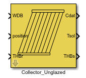
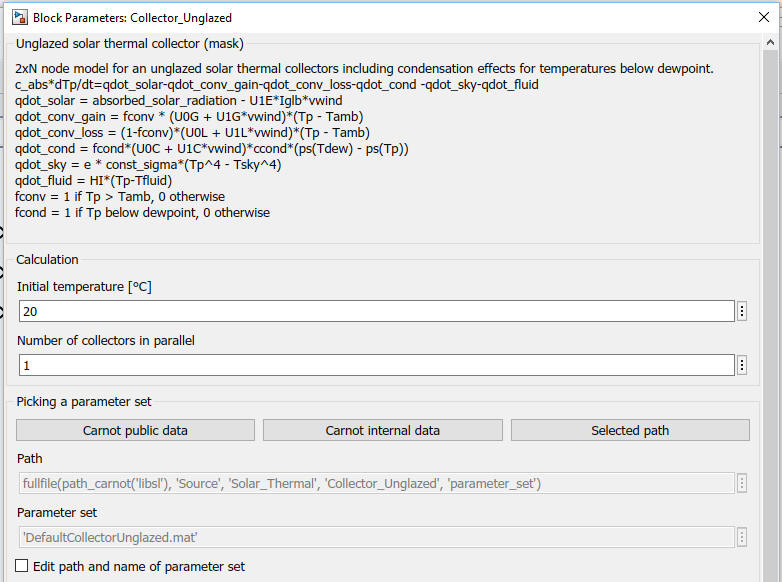

Collector_unglazed

Path: CARNOT/Source/Solar_Thermal
Purpose
Model
for an unglazed solar thermal collectors including condensation effects for
temperatures below dewpoint.
Description
The collector model is a
2 x N multinode model for thermal
collectors. The model is based on parameters obtained from measurement, i.e.
collector-test results. The energy balance for every node
is a differential equation, that is calculated in the
S-function
solarcollector_unglazed.
For the absorber the energy balance is:
c_abs * dTp/dt = qdot_solar - qdot_conv
- qdot_cond - qdot_sky - qdot_fluid
qdot_solar = absorbed_solar_radiation - uc1_eta0*Iglb*vwind
qdot_conv = qdot_conv_gain + qdot_conv_loss
qdot_conv_gain = fconv * (Uc0_gain +
Uc1_gain * vwind)
* (Tplast + fconv * (Tp - Tplast) - Tamb)
qdot_conv_loss = (1 - fconv) * (Uc0_loss +
Uc1_loss * vwind)
* (Tpo + fconv * (Tp - Tpo) - Tamb)
qdot_cond = fcond * (Uc0_cond + Uc1_cond *
vwind) * Ccond
* (ps(Tdew) - ps(Tp_cond))
qdot_sky = epsilon * sigma * (Tp^4 - Tsky^4)
qdot_fluid = hi * (Tp - Tf)
where :
fconv = ( min( Tpo , max(Tamb,Tplast) ) - Tplast ) / ( Tpo - Tplast )
fcond = ( min( Tpo , max(Tdew,Tplast) ) - Tplast ) / (
Tpo - Tplast )
Tp_cond = Tplast + fcond * ( Tp - Tplast )
Tpo = 2*Tp - Tplast
The fluid's node is devided into "NODES"
nodes.
The energy-balance for every node is a differential equation:
c_fluid * dTf/dt = hi * (Tp - Tf)
+ mdot * cp / Acoll * (Tlastnode - Tnode)
| Symbol | used for | unit |
| Acoll | absorber surface area | m² |
| Ccond | coefficient for pression in temperature conversion | K/Pa |
| cp | heat capacity of fluid | J/(kg*K) |
| c_abs | heat capacity of absorber per surface | J/(m²*K) |
| c_fluid | heat capacity of fluid per surface | J/(m²*K) |
| epsilon | effective emission coefficient of the absorber surface | - |
| fcond | share of the collector aperture area where condensation takes place | - |
| fconv | share of the collector aperture area where convection takes place | - |
| hi |
heat transfer coefficent between absorber and fluid |
W/(m^2*K) |
| mdot | mass flow rate | kg/s |
| ps | satured vapour pressure of water | Pa |
| qdot_solar | power input per surface from sun | W/m² |
| sigma | Stefan-Boltzmann constant | W/(m²*K4) |
| Tamb | ambient temperature | K |
| Tdew | dew point temperature | K |
| Tf | fluid temperature | K |
| Tp | absorber temperature | K |
| t | time | s |
| uc1_eta0 | wind dependance in optical efficiency | W/(m²*m/s) |
| Uc0_cond | wind speed independant part of the condensation heat transfer coefficient | W/(m²*Pa) |
| Uc1_cond | wind speed dependant part of the convection heat transfer coefficient | W/((m/s)*m²*Pa) |
| Uc0_gain | wind speed independant part of the heat transfer coefficientfor the convective gains | W/(m²*K) |
| Uc1_gain | wind speed dependant part of the heat transfer coefficientfor the convective gains | W/((m/s)*m²*K) |
| Uc0_loss | wind speed independant part of the heat transfer coefficientfor the convective losses | W/(m²*K) |
| Uc1_loss | wind speed dependant part of the heat transfer coefficientfor the convective losses | W/((m/s)*m²*K) |
| vwind | wind speed | m/s |
The collector calculates friction losses in the
massflow. This may be specified in the subsystem "pressure drop" of the collector (see
also subsystem "pressure drop of collector" in carnot/heat_source.
Static pressure is calculated if necessary, i.e. for thermosyphon systems.
See chapter
"basics
concepts, THB-Vector".
Inputs:
Outputs:
Parameters

Literature
Frank, Elimar: Modellierung unabgedeckter Kollektoren, Dissertation Uni
Kassel, 2007
Vajen, Klaus; Frank, Elimar: Unverglaste Kollektoren, OTTI Solarthermie, 2009
Characteristics
Direct Feedthrough Yes
Sample
time
Inherited
from driving block
Vectorized
No